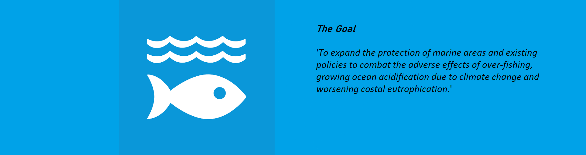

☰ open
Un Sustainability Goal 14
Mammals

Humans affect on Mammals
A Marine Mammal is any animal that lives in the ocean, breaths air, gives live birth, nurses their young, and is warm blooded. For example, Seals, Whales, Sea Otters and even Polar Bears.
These species are strugling to recover from being intensively hunted during the 20th century. With the increase in the protected areas of oceans around new zealand and key matting spots, the population of many of these species is increasing.
Interesting Facts
- Blue whales are the largest animal to ever live and can be up to 25m long.
- There are 129 species of marine mammals.
- Whales and dolphins are born with some hair when they are born. In fact, most whatles have hair follicles where land mammals would have whiskers today.
- Whales have around 6 inches of fat under there skin for warmth.
